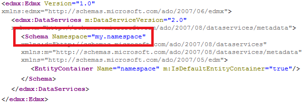

Every .xsodata file must define it's own namespace by using the namespace keyword:
Service definition sample.odata:namespace.xsodata
service namespace "my.namespace" {} The resulting service metadata document has the specified schema namespace:
http://<myHANAServer>:<port>/odata/services/<myService>.xsodata/$metadata
